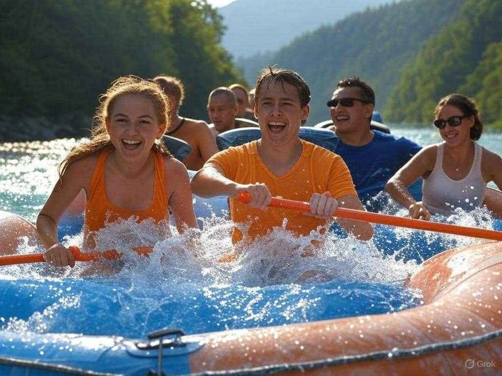

White Knuckle Rapids is a family-owned and operated business delivering unforgettable adventures for over 25 years. With experienced guides and trips catering to all skill levels, we ensure a safe and thrilling journey for every guest. Join us for the adventure of a lifetime!

White Knuckle Rapids
History
White Knuckle Rapids was founded in 1998 by a group of passionate adventurers who wanted to share their love for white water rafting with others. Over the years, we have grown into a leading rafting company, known for our commitment to safety, fun, and environmental stewardship. Our guides are trained professionals who are dedicated to providing you with an unforgettable experience on the river.